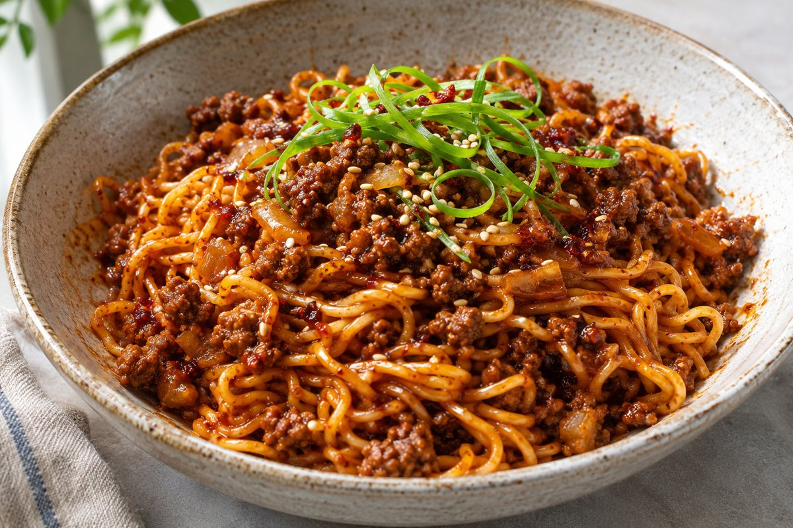

Gochujang Beef Noodles

Würzige Mie-Nudeln mit knusprigem Rinderhackfleisch in einer eingedickten Gochujang-Sojasauce, getoppt mit Frühlingszwiebeln, Sesam und Crispy Chili Öl.
Für 2 Personen
Zutaten
Für die Nudeln
- 300 g Rinderhackfleisch
- ½ TL Natron
- 1 Zwiebel
- 2 Knoblauchzehen
- 1 Stück Ingwer
- 2 EL Gochujang-Paste
- 2 EL dunkle Sojasauce
- 1 TL Zucker oder Agavendicksaft
- 400 ml Brühe
- 3 Nester Mie-Nudeln
- Etwas Öl zum Anbraten
Für das Topping
- Frühlingszwiebeln
- Sesam
- Crispy Chili Öl
Zubereitung
- Natron unter das Rinderhack kneten und das Fleisch in einer heißen Pfanne mit etwas Öl kräftig anbraten, bis es schön knusprig ist.
- Zwiebel, Knoblauch und Ingwer fein hacken, zum Hackfleisch geben und kurz mitbraten.
- Gochujang-Paste, dunkle Sojasauce und Zucker oder Agavendicksaft dazugeben und alles mit der Brühe aufgießen.
- Mie-Nudeln direkt in die Pfanne geben und einige Minuten köcheln lassen, bis sie gar sind und die Sauce schön eingedickt ist.
- Für das Topping die Frühlingszwiebeln schräg einschneiden, aufrollen und in lange, feine Streifen schneiden.
- Nudeln anrichten und mit Frühlingszwiebeln, Sesam und Crispy Chili Öl toppen.
Hinweise zur Quelle
Rezept nach den bereitgestellten Screenshots der Caption von piaundhalloumi. Die Quelle nennt keine genauen Vorbereitungs-, Koch- oder Gesamtzeiten. Größe bzw. Gewicht des Ingwerstücks und der Nudelnester sowie die Mengen für Öl und Toppings sind nicht angegeben. Die Brühenart ist nicht spezifiziert. Rezeptinspiration laut Original: @thegoodbite.
Originalquelle: Instagram-Reel von piaundhalloumi. Rezeptinspiration: thegoodbite.